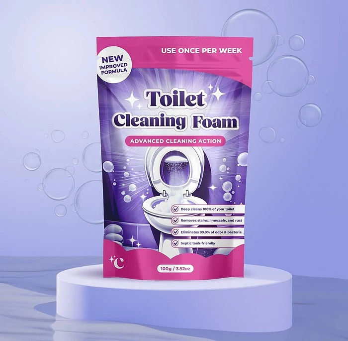
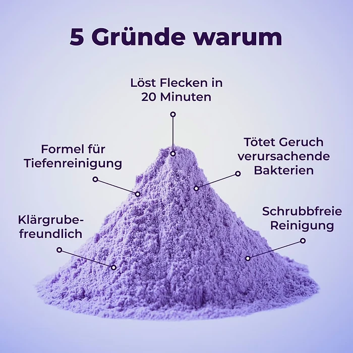

Was ist FizzClean und wie funktioniert es?
FizzClean ist ein Reinigungspulver für die Toilette, das laut der offiziellen Website in der Schüssel zu einem aktiven Schaum aufschäumt und Flecken, Kalk, Rost und Gerüche lösen soll, ohne dass Sie schrubben müssen. Es wird in einem Beutel mit 100 g verkauft, auf dem in englischer Sprache „Toilet Cleaning Foam – Advanced Cleaning Action“ und der Hinweis „Use once per week“ stehen.
Das Prinzip beschreibt der Hersteller so: Sie geben einen Esslöffel des Pulvers in die Toilettenschüssel, das Pulver reagiert mit dem Wasser und bildet einen dichten Schaum aus „Millionen von Bläschen“. Der Schaum soll in Ritzen und unter den Rand gelangen und dort mit einer sogenannten Tensid-Schrubbtechnologie hartnäckigen Schmutz lösen. Nach etwa 20 Minuten wird einfach gespült.
Laut Website soll FizzClean 99,9 % der geruchsverursachenden Bakterien beseitigen, einen frischen „Ocean Fresh“-Duft hinterlassen und für Klärgruben sowie alle Sanitärsysteme geeignet sein. Ein Produktbild betont „keine schädlichen Zutaten“ und nennt dazu: kein Ammoniak, keine Phosphate, kein Bleichmittel und kein Chlor. Eine vollständige Liste der Inhaltsstoffe oder ein Sicherheitsdatenblatt findet sich auf der Seite allerdings nicht.
Neben der Toilette soll das Pulver als Mehrzweckreiniger dienen: Mit Wasser angerührt entsteht laut häufig gestellten Fragen eine Paste für Badewannen, Waschbecken, Fliesen, Arbeitsplatten und Mülleimer. An anderer Stelle empfiehlt die Website, das Pulver mit Essig zu mischen, während die häufig gestellten Fragen ausdrücklich davon abraten, es mit säurehaltigen Reinigern zu kombinieren. Wir empfehlen, sich an die vorsichtigere Angabe zu halten.
Zur Einordnung: Schäumende Toilettenpulver, häufig auf Basis von Natron, Zitronensäure oder Percarbonat, sind seit Jahren verbreitet. Sie eignen sich gut für leichte bis mittlere Verschmutzungen und zur regelmäßigen Pflege. Sehr alte, dicke Urin- oder Kalksteinablagerungen brauchen dagegen oft mehrere Anwendungen oder zusätzlich eine Bürste, auch wenn die Vorher-nachher-Bilder auf der Website anderes nahelegen. Ergebnisse können variieren, wie der Hersteller selbst im Kleingedruckten schreibt.
FizzClean Funktionen
Laut der offiziellen Website bietet FizzClean:
Schäumende Wirkung: das Pulver bildet in der Schüssel einen aktiven Reinigungsschaum.
Einwirkzeit 20 Minuten: danach wird nur gespült, ohne Schrubben.
Gegen Flecken, Kalk und Rost: auch tief sitzende Verschmutzungen sollen gelöst werden.
Geruchsbekämpfung: soll 99,9 % der geruchsverursachenden Bakterien beseitigen.
Ohne Ammoniak, Phosphate, Bleichmittel und Chlor; geeignet für Klärgruben.
Mehrzweck: mit Wasser als Paste für Wanne, Waschbecken, Fliesen und Arbeitsplatten.
Auf den Produktbildern sind ein violetter Standbeutel mit 100 g Inhalt, ein Haufen lila Pulver und mehrere Vorher-nachher-Fotos von Toiletten mit Rost-, Kalk- und Schmutzrändern zu sehen. Laut häufig gestellten Fragen ist das Mittel für alle Toilettenarten aus Porzellan und Keramik geeignet und sollte an einem kühlen, trockenen Ort ohne direkte Sonne aufbewahrt werden.
In einer Vergleichstabelle stellt der Hersteller FizzClean „anderen Reinigungsmitteln“ gegenüber, mit den Punkten scheuerfreie Formel, Mehrzweck, Hautfreundlichkeit, Klärgrubenfreundlichkeit, lang anhaltende Frische und Entfernung hartnäckiger Flecken. Welche Produkte verglichen werden, nennt die Seite nicht. Wie viele Anwendungen ein Beutel ergibt, steht ebenfalls nicht da; bei einem Esslöffel pro Anwendung dürften es grob zehn bis fünfzehn sein. Gefahrenhinweise, Inhaltsstoffliste und Herstelleranschrift auf der Packung lassen sich auf den Bildern nicht lesen.
FizzClean Anwendung
Die Website beschreibt drei Schritte. Geben Sie einen Esslöffel FizzClean-Pulver in die Toilettenschüssel. Lassen Sie den Schaum etwa 20 Minuten einwirken, damit er Flecken, Schmutz und Ablagerungen lösen kann. Danach spülen Sie die Toilette einfach.
Für die besten Ergebnisse empfiehlt der Hersteller eine Anwendung pro Woche, damit sich Flecken und Bakterien gar nicht erst ansammeln. Für andere Flächen wird das Pulver laut häufig gestellten Fragen mit etwas Wasser zu einer Paste angerührt, aufgetragen und anschließend abgewischt.
Wichtig ist der Sicherheitshinweis aus den häufig gestellten Fragen: FizzClean sollte allein verwendet und nicht mit anderen Reinigungsmitteln gemischt werden, insbesondere nicht mit bleichmittel- oder säurehaltigen Produkten. Laut Website ist das Produkt nicht zum Verschlucken bestimmt und nur wie angegeben zu verwenden.
Allgemeine Hinweise: Bewahren Sie das Pulver für Kinder und Haustiere unzugänglich auf und verschließen Sie den Beutel nach jedem Gebrauch gut, damit keine Feuchtigkeit hineingelangt. Tragen Sie bei empfindlicher Haut Handschuhe, wenn Sie die Paste auf anderen Flächen verwenden, und testen Sie sie zuerst an einer unauffälligen Stelle, besonders bei Naturstein, Armaturen und beschichteten Oberflächen. Bei hartnäckigen Ablagerungen kann eine zweite Anwendung nötig sein, am besten über Nacht.
FizzClean – Rückerstattung
Laut der offiziellen Website gilt eine 30-Tage-Geld-zurück-Garantie. Der Hersteller schreibt, Sie könnten Ihr Paket zurückschicken, wenn Sie nicht zufrieden sind, und erhielten den vollen Betrag zurück. Nach der Rückgaberichtlinie können Produkte innerhalb von 30 Tagen nach Erhalt der Bestellung zurückgesendet werden, wenn sie beschädigt oder defekt sind, wenn Sie den falschen Artikel erhalten haben oder wenn Sie es sich anders überlegt haben.
Bei einer Rückgabe wegen Meinungsänderung muss die Ware unbenutzt, unbeschädigt und in der Originalverpackung sein. Für Reinigungsmittel bedeutet das in der Praxis, dass geöffnete und angebrochene Beutel in der Regel nicht mehr zurückgenommen werden. Bei beschädigter Ware bietet der Verkäufer Ersatz oder volle Rückerstattung an und bittet um Fotos.
Rücksendungen müssen vorab genehmigt werden und dürfen nur an die Adresse geschickt werden, die mit der Rücksendeautorisierung (RMA) mitgeteilt wird. Pakete ohne Genehmigung oder an die Firmenadresse werden laut Richtlinie nicht bearbeitet. Die Kosten der Rücksendung trägt der Kunde, die ursprünglichen Versandkosten werden nicht erstattet.
Für Verbraucher in der EU gilt zusätzlich das gesetzliche Widerrufsrecht von 14 Tagen, unabhängig von der freiwilligen Garantie. Wer mehrere Beutel bestellt, kann zunächst nur einen öffnen und die übrigen bei Unzufriedenheit ungeöffnet zurückschicken. Kontakt, Bestellverfolgung und die vollständigen Bedingungen finden Sie im Fußbereich der offiziellen Website. Bewahren Sie die Bestellbestätigung und die schriftliche Rücksendeautorisierung auf, bis die Erstattung eingegangen ist.
FizzClean Kundenbewertungen
-
LisaVerifizierter Kauf
„Früher habe ich Ewigkeiten damit verbracht, meine Toilette zu schrubben … Aber mit FizzClean ist es so viel einfacher, da es sich einfach um alles kümmert. Jetzt sieht meine Toilette so gut aus, wie ich sie noch nie gesehen habe.“
-
MarkVerifizierter Kauf
„Ich schämte mich so sehr für die Kalk- und Rostflecken in meiner Toilette … Aber nach nur einer Anwendung von FizzClean waren die Flecken vollständig verschwunden! Es hat sogar einige der hartnäckigen Gerüche beseitigt.“
-
EmilyVerifizierter Kauf
„Die Reinigung meiner Toilette war immer die Arbeit, die ich am meisten gefürchtet habe … FizzClean hat alles verändert! Es dauert höchstens 20 Minuten und meine Toilette ist sauberer als je zuvor.“
FizzClean – Wo kaufen?
FizzClean wird über die offizielle Bestellseite try-fizzclean.com verkauft, die eine eigene deutsche Version hat. Dort finden Sie Merkmale, Anleitung, Bewertungen, häufig gestellte Fragen und Kontakt, und Sie wählen direkt die gewünschte Anzahl an Beuteln.
Schäumende Toilettenpulver in ähnlicher Aufmachung werden von vielen Händlern angeboten, oft mit fast identischem Beutel und unter wechselnden Namen. Bei Angeboten auf Marktplätzen ist nicht sicher, ob es sich um dasselbe Produkt handelt, und die 30-Tage-Garantie des Verkäufers gilt dort in der Regel nicht.
Die Bestellseite arbeitet mit Hinweisen auf knappe Lagerbestände, einem befristeten Angebot und Formulierungen wie „Deutschlands #1 bei Toilettenreinigern“. Lassen Sie sich davon nicht drängen. Prüfen Sie vor dem Abschluss die Bestellübersicht, die Anzahl der Beutel, das Lieferland und die Rückgabebedingungen, und achten Sie darauf, dass Sie sich wirklich auf try-fizzclean.com befinden. Verkäufer ist laut Impressum die Movira LLC mit Sitz in Delaware (USA); Lieferung und Rücksendung laufen also über einen Händler außerhalb der EU. Speichern Sie die Bestellbestätigung mit Bestellnummer, bis das Paket angekommen ist.
Um sicherzugehen, dass Sie das Originalprodukt erhalten, besuchen die meisten Nutzer die offizielle Website.
Ist FizzClean Betrug?
Nach den verfügbaren Informationen gibt es keinen Hinweis darauf, dass FizzClean Betrug ist. Das Pulver wird über eine eigene Bestellseite mit deutscher Version, Anleitung, Vorher-nachher-Bildern, Kundenbewertungen, häufig gestellten Fragen, Rückgaberichtlinie, allgemeinen Geschäftsbedingungen und Impressum verkauft.
Positiv sind die 30-Tage-Geld-zurück-Garantie, die einfache Anwendung, die Angabe „ohne Ammoniak, Phosphate, Bleichmittel und Chlor“ und der Sicherheitshinweis, das Mittel nicht mit anderen Reinigern zu mischen.
Es gibt aber Punkte, die Aufmerksamkeit verdienen. Eine vollständige Inhaltsstoffliste fehlt, die Empfehlung, das Pulver mit Essig zu mischen, widerspricht dem Hinweis, keine säurehaltigen Mittel zu kombinieren, und Aussagen wie „reinigt Ihre Toilette zu 100 %“ oder „Sie müssen die Toilette nie wieder anfassen“ sind Werbung, keine überprüfbaren Angaben. Die Medienlogos auf der Seite verweisen auf keine konkreten Artikel, und die Zahl der Anwendungen pro Beutel wird nicht genannt.
Der Verkäufer sitzt in den USA, Rücksendungen brauchen eine vorherige Genehmigung, und geöffnete Beutel sind praktisch von der Rückgabe ausgeschlossen.
Wer realistische Erwartungen hat und das Pulver für die regelmäßige Toilettenpflege nutzen möchte, geht bei einer Bestellung über die offizielle Website nach heutigem Stand kein besonderes Risiko ein. Bei sehr alten Ablagerungen sollten Sie mit mehreren Anwendungen oder zusätzlicher Bürstenarbeit rechnen, bevor die Schüssel wieder ganz sauber ist.
Wer Produktdetails überprüfen oder die aktuelle Verfügbarkeit prüfen möchte, ist auf der offiziellen FizzClean-Website am sichersten aufgehoben.
